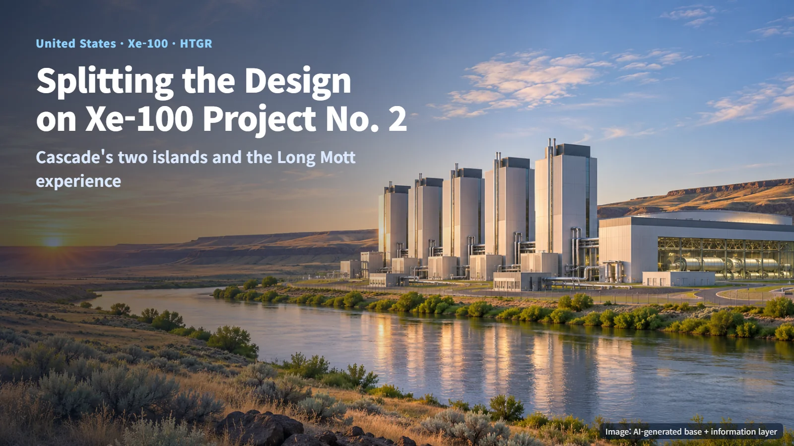
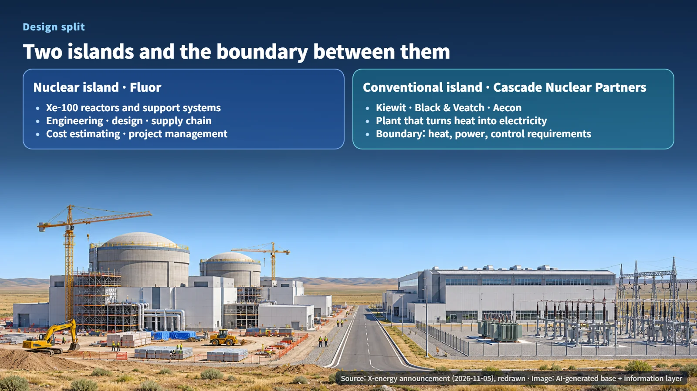
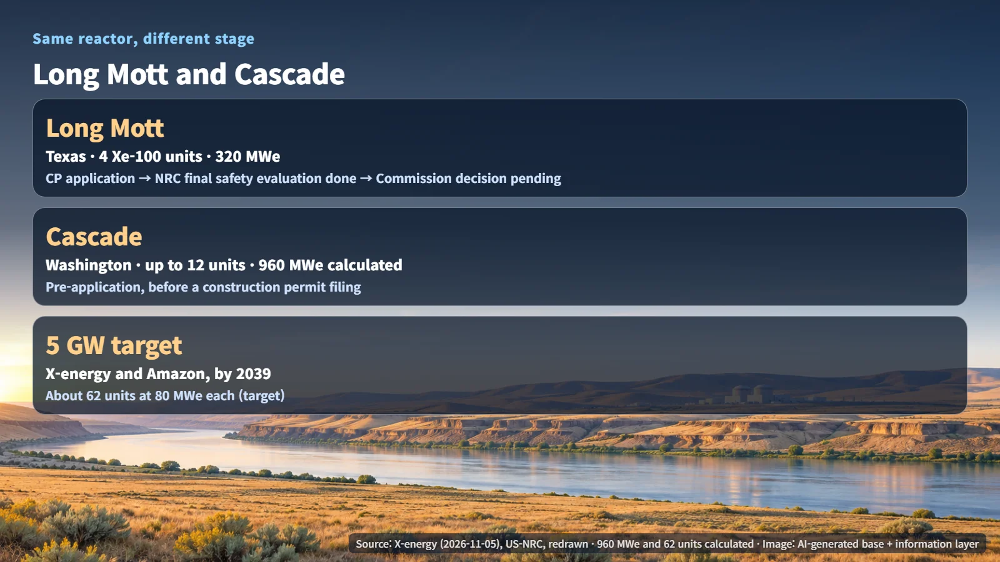
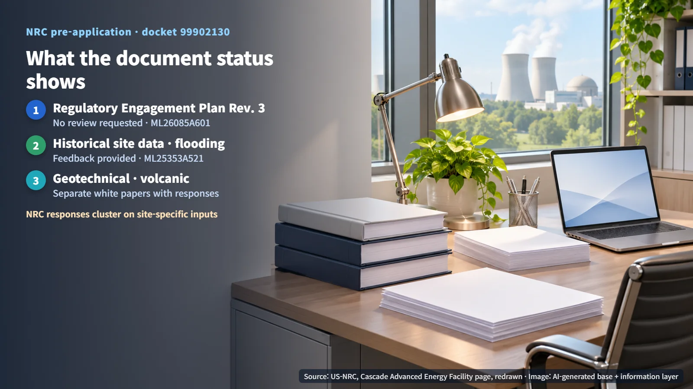

United States · Xe-100 · HTGR
How Is the Design Split on the Second Xe-100 Project? Cascade's Nuclear Island and Conventional Island, and What Carries Over from Long Mott
X-energy picked Fluor for Cascade's nuclear island while Cascade Nuclear Partners handles the conventional island. The boundary between them is where the work concentrates.
Is a nuclear power plant designed by a single company from top to bottom? In practice, the reactor side and the power-generation side are often handled by different firms, and joining those two halves cleanly becomes one of the central tasks of the project. This article follows up on our November 3 post on Long Mott's construction permit review. It looks at how the design work is divided on Cascade, X-energy's second Xe-100 project in the United States, and how far the experience from the first project, Long Mott, carries over.

Fluor on the Nuclear Island, Cascade Nuclear Partners on the Conventional Island
On November 5, 2026, X-energy announced that it had selected Fluor as the design and engineering firm for the nuclear island of the Cascade project, which Energy Northwest is pursuing near Richland, Washington. The nuclear island is the area that houses the reactor and the systems that support it. Fluor's scope covers engineering, design development, supply chain, cost estimating and project management. This is the second commercial nuclear island design contract between the two companies.
The other half of the plant, the conventional island, is the responsibility of Cascade Nuclear Partners, a team made up of Kiewit, Black & Veatch and Aecon. The conventional island is where heat from the reactor spins the steam turbine and generator, an industrial facility much like the equivalent section of any other power plant. Think of the nuclear island as the boiler room and the conventional island as the generator hall: heat, electricity and control signals all pass through the wall between the two rooms.
Splitting the design puts the work right at that wall. If one side changes its steam conditions or control requirements, the other side has to revise its design too, so both teams manage the requirements and the change history together. X-energy itself lists coordination between the nuclear island and the conventional island, design changes, and NRC decisions on how systems and components are classified as project risks. Because the design and quality requirements that apply to a system or component depend on whether the NRC classifies it as safety-related, deciding the classification of equipment near the boundary effectively decides how the work is divided between the two design organizations.

What the Second Project Reuses and What It Must Confirm Anew
The first project, Long Mott, is a plant planned for Calhoun County, Texas, with four Xe-100 units totaling 320 MWe. After the construction permit application, the NRC completed its final safety evaluation, and the project is now awaiting the Commission's decision on the construction permit. Cascade is considering up to 12 units on a site next to the existing Columbia nuclear plant in Benton County, Washington, and is in pre-application engagement ahead of a construction permit application. Same reactor, but on the licensing ladder Long Mott stands further along.
The scale differs as well. The Xe-100 is an 80 MWe high-temperature gas-cooled reactor per unit, and the company offers standard configurations of four or twelve units. For a 12-unit configuration, 12 units × 80 MWe works out to about 960 MWe, three times Long Mott's 320 MWe. Cascade is also the first project under X-energy and Amazon's target of deploying 5 GW of new nuclear capacity by 2039, a goal tied to AI-driven electricity demand. Dividing 5 GW, or 5,000 MWe, by 80 MWe works out to about 62 units. That figure simply converts the target into a number of Xe-100 units; actual orders and construction permits will proceed project by project in the steps ahead.

X-energy says Cascade can draw on its Long Mott review experience and on the operating history of the Columbia site. Cutting cost and schedule through repeat design is the effect the company is aiming for, and quantitative results have not yet been made public. The core of a second project can therefore be summed up as carrying over the common reactor specification while fitting the site inputs and the conventional-island interface anew.
What the NRC Pre-Application Documents Show About the Stage
Pre-application engagement is the process in which a developer aligns on key issues with the regulator before submitting a formal application. The NRC's Cascade project page directs readers to docket 99902130 for the related material, and the status labels on those documents show how far the engagement has progressed.
Revision 3 of the Regulatory Engagement Plan carries the label "No review requested" (ML26085A601). It is a plan the developer filed for the record without asking for review, setting out the direction of future engagement. The historical site information and flooding material is marked "Feedback provided" (linked to ML25353A521), showing that the NRC has replied to it, while the geotechnical and volcanic material each link to separate white papers and responses.
What stands out is that the NRC's responses cluster around site data such as flooding, geotechnical conditions and volcanic hazards. The common reactor specification can be carried from one project to the next, whereas the conditions of the ground and water are inputs unique to the Cascade site, and they are the items that get evaluated and confirmed afresh.

Next Milestones
In its 2025 announcement selecting a design-builder, Energy Northwest described negotiations under a progressive design-build (PDB) approach. Under this structure, scope, schedule and cost are defined during an early development phase before the project moves to full execution. The November 2026 nuclear island contract announcement makes the division of design work considerably more concrete. The detailed acceptance authority and delivery deadlines in the contract, and the actual interface design values between the nuclear island and the conventional island, have not been made public.
Three threads are worth watching from here. At Long Mott, the NRC Commission's decision on the construction permit. At Cascade, the continuing pre-application engagement and the path toward a construction permit application. And across the program, design maturity, procurement of long-lead items, and the owner's investment decision and transition to the construction phase. How quickly the same reactor settles onto a second site will be the first real test of the SMR promise of repeat construction.